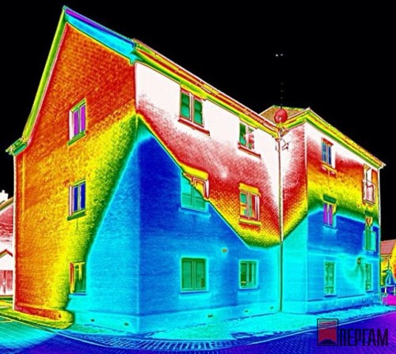

Добро пожаловать!
Теплови́зор (тепло + лат. vīsio «зрение; видение») — устройство для наблюдения за распределением температуры исследуемой поверхности. Распределение температуры отображается на дисплее как цветная картинка, где разным температурам соответствуют разные цвета. Изучение тепловых изображений называется термографией 
Первый абзац.Благодаря всем этим возможностям тепловизионный метод позволяет сэкономить немалые деньги – как на оплате за отопление путем устранения теплопотерь, так и на ремонтных работах, которых можно избежать, вовремя обнаружив изъяны конструкции объекта. Процедура такого обследования является очень выгодным вложением средств, которое в кратчайшие сроки после её проведения может окупиться как минимум десятикратно.
ГОСТ 23483-79 Контроль неразрушающий. Методы теплового вида. Общие требования утратил силу в РФ Настоящий стандарт распространяется на методы теплового вида неразрушающего контроля и устанавливает область применения, общие требования к аппаратуре и стандартным образцам, порядку подготовки и проведению контроля, оформлению результатов и требования безопасности Текст ГОСТ 23483-79
К преимуществам тепловизионного обследования можно отнести: Быстроту: на съемку понадобится считанные часы времени, а если речь идёт о небольших объектах – и того меньше; Простоту его проведения: для тепловизионного анализа заказчику не требуется совершать никаких подготовительных работ; Наглядность получаемых результатов: вы четко увидите проблемные зоны и сразу сможете определить пути их устранения; Прекрасную точность: от инфракрасной камеры не укроются даже самые маленькие дефекты и проблемные точки на объекте. Наша компания предлагает вам провести подобное обследование, благодаря которому вы сможете решить ряд проблем и вопросов, связанных с состоянием жилья. Если вы не являетесь его владельцем и вам всего лишь нужно проверить состояние объекта – вас также устроит этот удобный и дающий исчерпывающую информацию метод, на который нами предлагается выгодная и невысокая цена. Услуга тепловизионного обследования ограждающих конструкций – это эффективный прием выявления широкого спектра проблем, связанных с состоянием теплоизоляции, ограждающих конструкций, отделки, кровли и коммуникаций здания. Второй абзац.